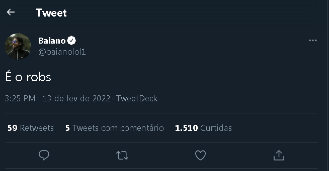
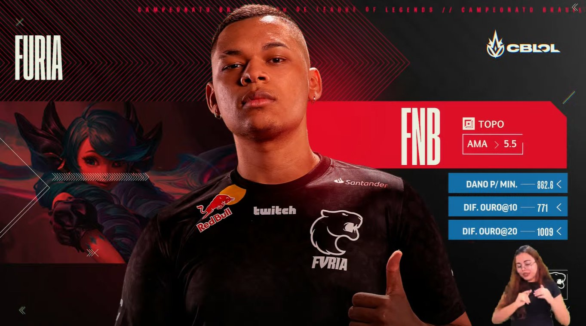
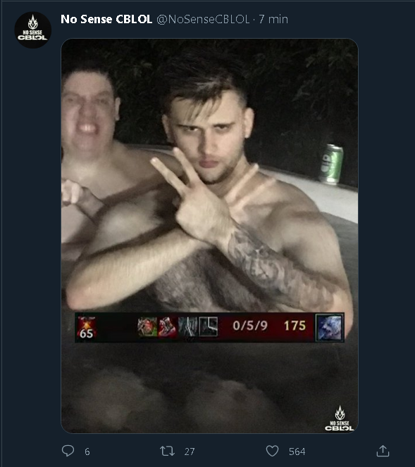

Após pickar Janna top, Robs é terrivelmente espancado na game room da Loud
Jogador faz pick considerado crime em mais de 130 países e isso
faz com que companheiros de equipe se revoltem.

Super Fúria se fixa em primeiro após passar por cima de Kabum que jogou desfalcada
Sem jungler, Kabum até tenta resistir, mas acaba sendo batida pela poderosíssima Fúria.

Sem bronziocre, brasileiros se desesperam no twitter
"Tem gente morrendo aqui. Passando realmente mal. Não teremos o que fazer no domigo sem o Bronziocre."
- Fonte: confia
Poderosíssima Fúria se consagra no primeiro lugar do campeonato

"Dois Nanicos". Diz Ranger sobre Loud e paiN
Flamengo desencanta em cima da poderosíssima Rensga
Após 5 rodadas de fome, Flamengo finalmente conquista sua primeira vitória no campeonato e já acredita no título.
"Estou muito feliz e motivado agora com a nossa vitória. O título é finalmente possível. Acho difícil eles nos pararem agora"
- Tutsz
O Luís Inácio não foi muito fã da comemoração.